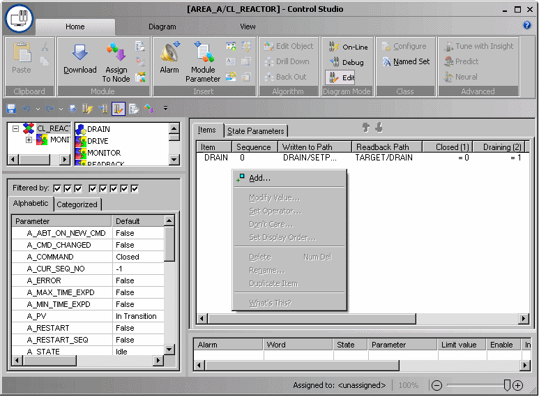

State-driven module example
An equipment module named REACTOR_OUTLET contains three control modules assigned to on-off valves: OUTLET, PRODUCT, and DRAIN.
REACTOR_OUTLET is based on a named set called OutletState. The OutletState named set has five states: Closed, Draining, Releasing_Product, Error, and In Transition. The In Transition state has a value of 255 which designates it as an undefined state. The named set used in a state-driven algorithm must contain a state with a value of 255 to designate an undefined condition. The system does not create a composite block for the undefined state.
The following table shows how the named set states correlate to the composite blocks.
|
Named set state |
State value |
State composite block |
|---|---|---|
|
Closed |
1 |
STATE_00001 |
|
Draining |
2 |
STATE_00002 |
|
Releasing_Product |
3 |
STATE_00003 |
|
Error |
254 |
STATE_00254 |
Add items at the module level that define how state changes drive specific contained module parameters. The following graphic shows the interface for adding items. When adding an item, you must provide an item name and browse to the parameters you want to write to and read from. In some cases the program supplies default parameter fields. For example, if you select a MODE parameter as a write path (without browsing to a specific field) and then click OK, the program automatically uses the TARGET field as the write path and the ACTUAL field as the readback path.
Note that an item named DRAIN has already been added for the setpoint of the contained module named DRAIN. The number of items supported in the table depends in part on the number of states. The number of states multiplied by the number of items cannot exceed 2,048.

You can copy an existing item by selecting and right-clicking it, and then selecting Duplicate Item from the context menu. The selected item is duplicated below the last item in the list and renamed ITEMn.
After you add an item, define the value that each state writes to the associated parameter by clicking on the value field under the state name in the table. When you click a field, the item name appears on the item's tab. It is also possible to manually enter values under the state names in online mode. If a value is entered manually, the algorithm uses the manually entered value at the appropriate state change.
Each item has a sequence number. The default is 0 (zero) meaning that they are written to without waiting for confirmation. You can assign each item a sequence number between 1 and 15 to define the execution order. Items are executed in sequence order, from lowest to highest. Items with non-zero sequence numbers wait for all items with the previous sequence numbers to confirm. .
You can prevent a state from writing to a parameter by selecting and right-clicking the value field, and then selecting Don't Care from the context menu. A check mark appears on the menu and the value field changes to three dashes (---). Setpoints set to Don't Care are not driven. Readback is immediate for setpoints set to Don't Care.
For this example, the following items are required:
|
Item name |
Closed state |
Draining state |
Releasing_Product state |
Write path (contained module/parameter) |
|---|---|---|---|---|
|
DRAIN |
0 (valve closed) |
1 (valve open) |
0 (valve closed) |
DRAIN/SETPOINT |
|
OUTLET |
0 (valve closed) |
1 (valve open) |
1 (valve open) |
OUTLET/SETPOINT |
|
PRODUCT |
0 (valve closed) |
0 (valve closed) |
1 (valve open) |
PRODUCT/SETPOINT |
The default comparison between the Write and Readback values is equals (=). You may change this as follows: Select and right-click the value under the state name, and then click Set Operator. This allows you to choose the comparison operator (=, >, >=, <, <=).
If the comparison involves a floating point number, it is recommended not to use the equals (=) operator because differences caused by rounding may occur, preventing the compared values from matching.
When viewing a state-driven module online, the items may be preceded by green check marks or red Xs. Items with red Xs have been driven but their readback has not been successful. Green check marks indicate the readback was successful. A blank indicates that the item has not been driven because it is waiting for items with lower sequence numbers to complete.
If the write path for an item references a user-created parameter and you need to change the parameter type, delete the item first, change the parameter type and add a new item referencing the revised parameter.
The instructions in the underlying SFC are ordered based on the sequence number. You can take advantage of this sequencing when, for example, you need to change a mode before changing the value of a parameter. For example, an AI block mode must be in MANUAL mode before OUT.CV can be changed. You can change the display order, but that has no effect on execution order.
A write check failure on a single item inhibits the writing of any items for that state.
The order of items cannot be guaranteed if the write paths are in different controllers.